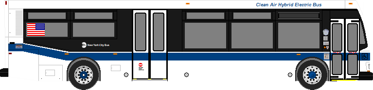
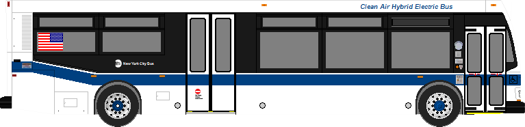
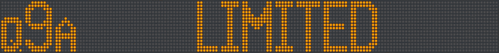
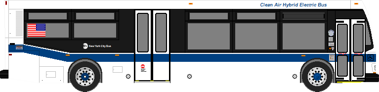
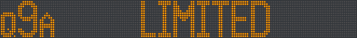
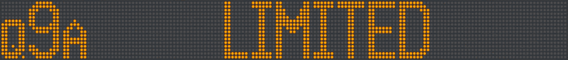
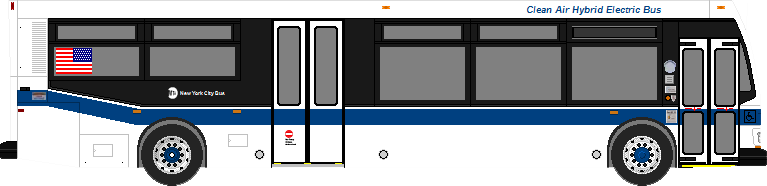
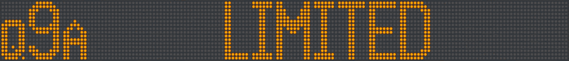

 





❌ #1 Setup project following these instructions. Make sure node server is running on the Server.
❌ #2 and 3 Run the "Tracking Server" on the same network or device as this "Client Projector." (Test to see if left hand control is visible on network.)
❌ #4 Show this "Client Projector" page in full screen (F11) but NOT in a WebVR browser. Make sure no toolbars or browser UI is visible.
❌ #5 Use the left HTC Vive controller to place the virtual projector at the same place as the real-life projector and press the `trigger` button.
❌ #6 Press the "Init" button below and then use the controls to calibrate.